Gestion des véhicules et engins
Notice illustrée • Version 1.0.0 • Aperçu local du contenu MediaWiki, non publié
Gestion des véhicules et engins est un module externe pour Dolibarr permettant de centraliser le suivi d'un parc de véhicules routiers, d'utilitaires et d'engins. Il regroupe les caractéristiques du matériel, les affectations des conducteurs, les kilométrages, les consommations, les interventions, les assurances et les contrôles réglementaires.
Le module permet également de relier les factures fournisseurs aux interventions et aux contrôles, puis de générer un dossier véhicule réunissant un récapitulatif PDF et une archive des documents associés.
Cette page comprend la présentation du module, son installation et sa notice d'utilisation illustrée. Les captures ont été réalisées le 5 septembre 2026 sur une instance de démonstration Dolibarr 24 avec Multicompany. Les valeurs affichées servent uniquement d'exemples ; elles ne constituent ni des réglages recommandés ni des références de consommation. Le thème et la version de Dolibarr peuvent faire varier la présentation.
Informations
| Information | Valeur |
|---|
| Nom | Gestion des véhicules et engins |
| Identifiant technique | lmdbvehiclemanagement |
| Auteur | Pierre Ardoin |
| Famille | Les Métiers du Bâtiment |
| Version présentée | 1.0.0 — première version stable du 4 septembre 2026 |
| Dolibarr minimum | 20.0 |
| PHP minimum | 8.0 |
| Base de données | MySQL ou MariaDB |
| Langues fournies | Français et anglais |
| Multicompany | Compatible ; module Multicompany facultatif |
| Licence | GNU GPL version 3 ou ultérieure |
| Code source | Dépôt GitHub |
Fonctionnalités
Gestion du parc
- Fiches pour les véhicules routiers, utilitaires et engins, avec immatriculation facultative.
- Caractéristiques techniques, énergie, capacités et autonomie WLTP.
- Suivi du cycle de vie, du brouillon à la cession.
- Affectations des conducteurs, avec plusieurs affectations simultanées possibles et une seule affectation principale par période.
- Relevés kilométriques et prise en charge des corrections ou remplacements de compteur.
- Événements d'entretien, pannes et incidents.
- Chronologie regroupant événements, contrôles et consommations.
- Modèles de numérotation, dont un modèle fondé sur l'immatriculation.
Les listes proposent des filtres, le tri, la pagination et des colonnes personnalisables. Les fiches utilisent les notes, contacts, fichiers joints et objets liés de Dolibarr selon les fonctions concernées.
Pleins, recharges et consommations
Le module suit les carburants, les recharges électriques, l'hydrogène et les additifs. Les consommables sont associés à leurs unités et aux énergies compatibles. Les capacités du véhicule permettent de signaler un dépassement lors de la saisie.
- Synchronisation des consommations avec les relevés kilométriques.
- Synthèses par véhicule, consommable et unité.
- Statistiques de coûts, distances et consommations, avec graphiques Dolibarr.
- Import CSV et export natif.
- Prix facultatif pour les additifs : un montant absent est distingué d'un montant égal à zéro et n'entre pas dans les statistiques de prix.
Une option par entité permet de créer une opération diverse native pour un plein ou une recharge. Elle nécessite un compte bancaire, les informations de règlement et un justificatif PDF, JPEG ou PNG. Les métadonnées des images justificatives sont nettoyées.
La comptabilité reste facultative. En comptabilité en partie double, un compte général du plan actif est requis. Les données financières et le justificatif sont verrouillés après rapprochement bancaire ou transfert comptable.
Lorsque la création d'opérations diverses est activée, l'import CSV des consommations est indisponible. L'activation de cette option ne crée pas d'opérations pour les consommations historiques.
Assurances
- Contrats individuels ou contrats de flotte couvrant plusieurs véhicules.
- Couverture principale et couvertures complémentaires.
- Contacts de l'assureur et du courtier.
- Attestations communes ou propres à un véhicule, avec justificatifs, validation, rejet et archivage.
- Référents utilisateurs ou groupes et personnels affectés éligibles.
- Relances avant et après échéance, avec modèles d'emails et travaux planifiés natifs.
Contrôles réglementaires
Un questionnaire guidé permet de qualifier les véhicules et engins et de déterminer les exigences applicables à partir des informations enregistrées.
La version 1.0.0 fournit un catalogue français versionné couvrant notamment les contrôles routiers, la pollution, la catégorie L, les usages spécialisés, les vérifications générales périodiques (VGP), la mise ou remise en service, le tachygraphe, l'ADR et l'ATP. Des surcharges par entité et des règles personnalisées complètent le catalogue.
- Contrôles numérotés avec organisme, résultat, dates et justificatif obligatoire.
- Validation immuable, annulation motivée, remplacement, contre-visite et archivage encadré.
- Échéancier et registre de sécurité.
- Export et import de contrôles en brouillon.
- Blocage configurable des nouvelles affectations et mises en service.
- Recalcul quotidien et rappels par travail planifié, avec événement Agenda unique par exigence.
Lorsqu'une information indispensable manque, le module ne calcule pas d'échéance arbitraire. Il constitue une aide au suivi documentaire : il ne réalise pas les contrôles et ne délivre aucun rapport officiel.
Factures fournisseurs liées
Depuis un événement ou un contrôle, l'action Créer une facture fournisseur ouvre le formulaire natif Dolibarr. Le fournisseur de l'intervention est proposé lorsqu'il est renseigné et accessible ; il peut être modifié. La facture est créée en brouillon et liée à l'objet d'origine.
Il est également possible de sélectionner une facture existante ou d'utiliser l'action Lier à depuis une facture fournisseur. Les relations sont visibles dans les blocs Objets liés des deux fiches. Plusieurs factures peuvent être associées à une même intervention.
Une déliaison retire uniquement la relation. Elle ne supprime pas la facture et ne modifie pas les données réglementaires d'un contrôle validé. Les objets liés doivent appartenir à l'entité courante et les droits requis sur chacun d'eux restent nécessaires.
Dossier véhicule PDF et ZIP
Le modèle Dossier véhicule produit deux fichiers :
- un PDF regroupant les caractéristiques du véhicule, la chronologie disponible, les événements, les contrôles, les factures liées, une synthèse des pleins et recharges et l'inventaire documentaire ;
- un ZIP contenant ce PDF et les fichiers originaux du véhicule, des événements, des contrôles et des factures liées.
Les brouillons, annulations et archives sont inclus. Une facture liée à plusieurs interventions n'est embarquée qu'une fois. Les fichiers indexés mais absents sont signalés dans le PDF.
Les justificatifs des consommations et de leurs opérations diverses, les fichiers temporaires, les aperçus et les dossiers précédents sont exclus de l'archive. Le tableau de synthèse des consommations présente les dates, kilométrages, références, consommables, natures, unités et références d'huile ; il ne présente ni les quantités ni les montants.
La génération utilise les données et documents déjà disponibles : elle ne génère pas les documents commerciaux des factures et ne reconstitue pas un historique non enregistré.
La génération nécessite les droits de lecture et d'écriture du véhicule ainsi que la lecture des factures fournisseurs. La consultation du dossier nécessite les droits cumulés de lecture correspondants. Le dossier n'est pas accessible aux utilisateurs externes ni par lien public.
Gestion multientité
Avec Multicompany, les objets partageables sont configurables dans les réglages natifs de partage. Les listes concernées affichent un filtre et une colonne Environnement.
Les documents restent stockés dans l'entité propriétaire de l'objet, y compris lorsqu'il est consulté depuis une autre entité autorisée. Les réglages par entité, modèles et choix de partage sont conservés lors d'une désactivation puis réactivation du module.
Prérequis et dépendances
Le socle requis est Dolibarr 20 ou supérieur, PHP 8.0 ou supérieur et MySQL/MariaDB. Les dépendances supplémentaires varient selon les fonctions utilisées.
| Module ou extension | Utilisation |
|---|
| Agenda | Échéances et événements ; recommandé pour le suivi automatique. |
| Travaux planifiés | Exécution périodique des recalculs et relances. |
| Banques et Caisses | Requis pour créer les opérations diverses des consommations. |
| Comptabilité | Facultative ; règles de compte adaptées au mode comptable actif. |
| Factures fournisseurs | Requis pour les liaisons de factures et les dossiers véhicule. |
Extension PHP ZIP (ZipArchive) | Requise pour générer le dossier PDF/ZIP. |
| Multicompany | Facultatif ; partage et gestion de plusieurs entités. |
| Ressources | Facultatif ; liaison à une ressource Dolibarr. |
L'onglet Compatibilité des réglages indique les dépendances et fonctionnalités disponibles dans l'environnement courant.
Installation
- Récupérer une distribution du module correspondant à la version 1.0.0.
- Placer le répertoire
lmdbvehiclemanagement dans le répertoire des modules externes de l'installation Dolibarr. Les fichiers du module doivent se trouver directement dans ce répertoire, sans second répertoire imbriqué du même nom. - Se connecter à Dolibarr avec un compte administrateur.
- Ouvrir Accueil → Configuration → Modules/Applications.
- Rechercher et activer Gestion des véhicules et engins, dans la famille Les Métiers du Bâtiment.
- Ouvrir les réglages avec la roue dentée du module et consulter l'onglet Compatibilité.
- Attribuer aux utilisateurs et groupes les permissions correspondant à leurs fonctions.
Si une archive de déploiement Dolibarr est fournie, elle peut être installée depuis l'écran natif de déploiement des modules externes.
Configuration initiale
- Vérifier les dictionnaires utiles au parc : énergies, consommables, types de matériel, profils, types et résultats de contrôles.
- Choisir les modèles de numérotation des objets.
- Configurer les options d'assurance, les référents et les modèles d'emails de relance.
- Vérifier les règles réglementaires et les options de blocage souhaitées.
- Dans les Travaux planifiés de Dolibarr, vérifier et activer les traitements nécessaires aux recalculs et aux rappels automatiques.
- Si les opérations diverses sont utilisées, configurer cette option et ses paramètres bancaires dans chaque entité concernée.
- Pour les dossiers véhicule, activer Dossier véhicule dans le bloc Modèles de document et, si souhaité, le choisir comme modèle par défaut.
- En environnement Multicompany, configurer les partages et les permissions d'accès aux entités.
Les onglets Compatibilité et À propos sont accessibles depuis les réglages du module.
Choisir la numérotation et activer le dossier véhicule
- Ouvrir l'onglet Paramètres des réglages.
- Dans Modèles de documents, activer la ligne Dossier véhicule. La colonne Défaut permet de le proposer automatiquement lors de la génération.
- Dans Modèles de numérotation, choisir le modèle de chaque objet.
- Pour les véhicules, choisir standard pour une référence séquentielle ou registration pour utiliser l'immatriculation normalisée. Un matériel sans immatriculation reçoit une référence de type MAT avec ce dernier modèle.
Les exemples de référence permettent de vérifier le résultat attendu. Sur un parc existant, un changement impliquant la reprise des références doit suivre la procédure de migration proposée par le module.
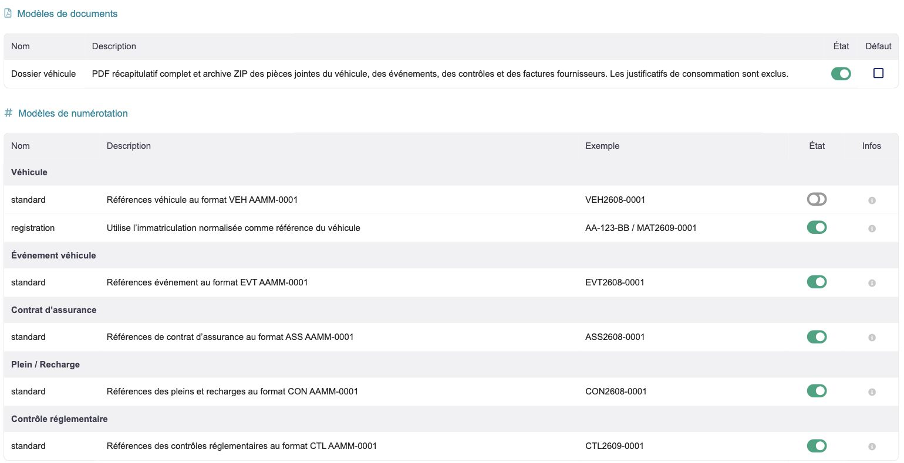
Réglages des modèles documentaires et de la numérotation. Le dossier est activé ; le choix du modèle par défaut est distinct.Configurer les dépenses des pleins et recharges
Dans Paramètres, le bloc Tickets et opérations diverses des pleins / recharges permet d'activer la création d'une dépense native.
- Choisir le compte bancaire de l'entité et le mode de règlement habituel.
- Renseigner les comptes comptables selon le mode de comptabilité utilisé. Le compte général est obligatoire en partie double ; le compte auxiliaire reste facultatif.
- Activer l'option souhaitée et cliquer sur Enregistrer.
- Vérifier ensuite la saisie d'un plein : les informations de règlement et le ticket sont demandés lorsque cette option est active.
Cette option concerne les nouvelles opérations. Elle ne transforme pas les anciennes consommations en dépenses et rend leur import CSV indisponible.
Configurer les relances d'assurance
- Ouvrir l'onglet Assurance des réglages.
- Choisir les utilisateurs et/ou groupes référents.
- Indiquer si les personnels affectés doivent être inclus, puis sélectionner les types d'affectation concernés.
- Sélectionner les seuils avant expiration et les délais de répétition après expiration ou absence de justificatif.
- Choisir les modèles d'emails de dépôt et de contrôle.
- Activer les relances et cliquer sur Enregistrer.
- Utiliser le lien Ouvrir les travaux planifiés pour vérifier l'état de la tâche et son dernier résultat.
Le bouton Envoyer un email de test déclenche un envoi réel : vérifier les destinataires avant de l'utiliser. Les délais visibles sur l'illustration sont ceux de l'environnement de démonstration.
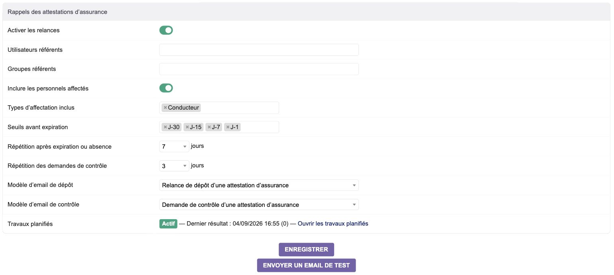
Choix des référents, seuils de relance, modèles d'emails et accès au travail planifié d'assurance.Configurer les rappels des contrôles
Dans l'onglet Contrôles réglementaires des réglages :
- Choisir les horizons de rappel et le délai d'affichage « à échéance prochaine ».
- Sélectionner les utilisateurs ou groupes destinataires et préciser si le conducteur affecté doit être inclus.
- Choisir le modèle de rappel et, si nécessaire, activer les rappels journaliers après échéance.
- Enregistrer les réglages puis vérifier le travail planifié de recalcul et de rappel.
Le catalogue distingue les règles natives des adaptations propres à l'entité. Les surcharges et règles personnalisées doivent correspondre au matériel réellement exploité et conserver leur justification.
Notice — premiers pas
Accéder au parc et retrouver une fiche
Ouvrir le menu Gestion des véhicules et engins repéré par une icône de voiture. Le menu latéral regroupe le parc, les événements, les contrôles, la consommation et les contrats d'assurance.
- Cliquer sur Liste des véhicules et engins.
- Saisir un critère dans les filtres de référence, immatriculation, libellé, modèle ou état.
- Cliquer sur la loupe pour rechercher ; la croix réinitialise les filtres.
- Cliquer sur un en-tête de colonne pour trier, ou sur le sélecteur de colonnes pour adapter la liste.
- Ouvrir le véhicule en cliquant sur sa référence.
Le sélecteur de limite règle le nombre de lignes par page. Lorsqu'un partage multientité est actif, la colonne et le filtre Environnement permettent d'identifier l'entité d'origine.
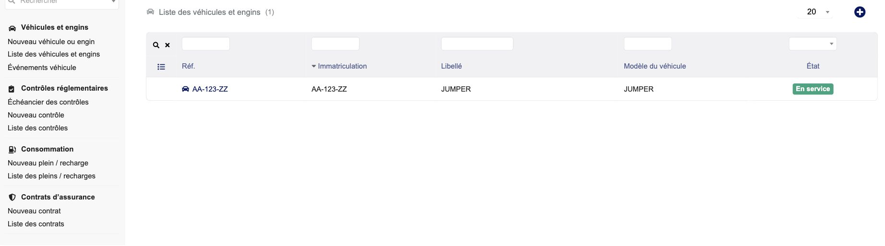
Accès aux rubriques du module et recherche dans le parc de démonstration.Créer un véhicule ou un engin
- Cliquer sur Nouveau véhicule ou engin.
- Renseigner un Libellé explicite et l'immatriculation si le matériel en possède une.
- Choisir le Type principal de matériel, puis compléter les caractéristiques connues : catégorie, genre, masses, nombre de places, territoire, numéro de série, marque et modèle.
- Choisir l'énergie et renseigner l'autonomie lorsqu'elle est connue.
- Compléter les dates de construction, première immatriculation et mise en service selon les informations disponibles.
- Choisir le mode de détention et le propriétaire. La liaison à une ressource Dolibarr est facultative.
- Compléter la description et cliquer sur Enregistrer en bas du formulaire.
La fiche est créée en brouillon. La référence suit le modèle de numérotation configuré ; il n'est pas nécessaire de fabriquer un identifiant manuellement. Compléter ensuite les capacités des consommables utiles au véhicule depuis sa fiche en modification.
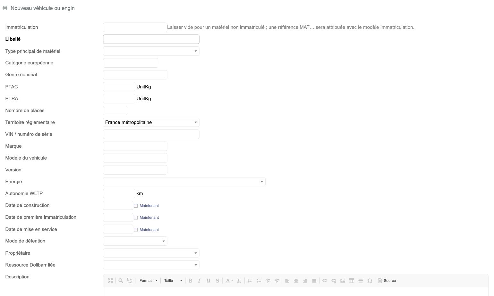
Partie supérieure du formulaire de création : identification, caractéristiques techniques et dates.Lire la fiche et son état
La fiche présente la référence, le libellé et un badge d'état, puis les caractéristiques techniques et la couverture d'assurance disponible. Les onglets donnent accès aux notes, documents, événements, affectations, kilométrages, consommations, contrôles et historique selon les droits.
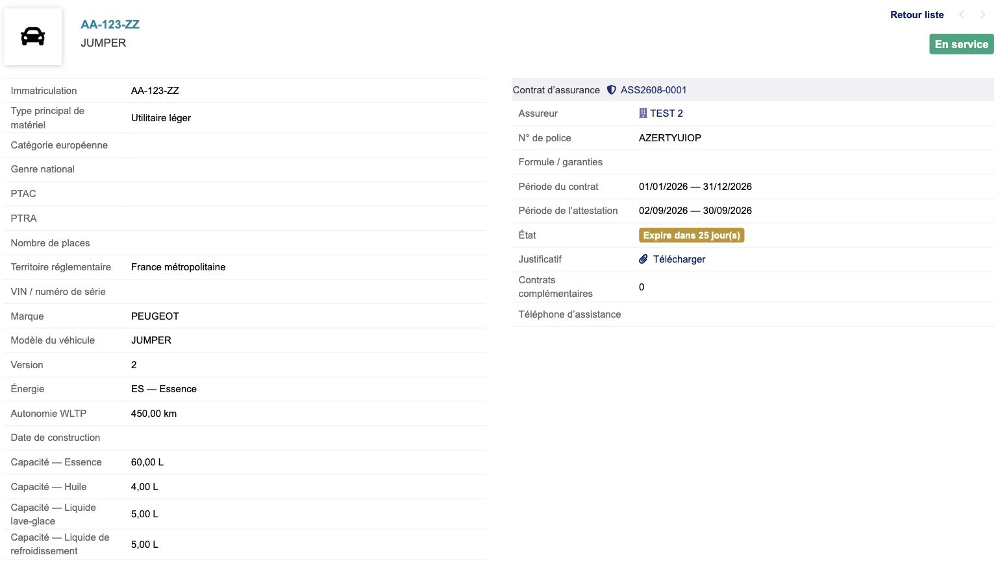
Extrait de la fiche d'un véhicule en service : caractéristiques, capacités et résumé d'assurance.| État | Utilisation |
|---|
| Brouillon | Préparer et vérifier la fiche avant validation. |
| Validé | Véhicule identifié et validé, avant sa mise en service. |
| En service | Matériel utilisé dans le parc. |
| Hors service | Matériel retiré de l'exploitation. |
| Cédé / vendu | Matériel sorti du parc à la suite d'une cession. |
Utiliser les actions proposées sur la fiche, notamment Valider, Mettre en service, Mettre hors service ou Céder / vendre, selon l'état courant et les permissions. Les règles réglementaires peuvent empêcher une mise en service. Une sortie de parc doit être enregistrée par le changement d'état approprié afin de conserver son historique ; la suppression répond à un autre besoin.
Notice — utilisation quotidienne
Affecter un conducteur
- Ouvrir l'onglet Affectations du véhicule.
- Cliquer sur Ajouter une affectation.
- Sélectionner le conducteur et renseigner la date et l'heure de début.
- Renseigner une fin lorsqu'elle est connue, puis le type d'affectation.
- Préciser s'il s'agit de l'affectation principale, choisir son état et compléter le motif utile.
- Cliquer sur Enregistrer.
Plusieurs affectations peuvent coexister, mais une seule peut être principale sur une même période. Pour terminer une affectation, ouvrir sa modification avec le crayon et renseigner sa fin et son état. Vérifier le résultat dans le tableau.
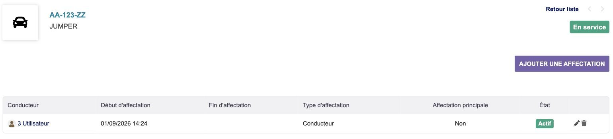
Liste des affectations : conducteur, période, type, caractère principal et état.Ajouter ou corriger un relevé kilométrique
- Ouvrir l'onglet Kilométrage et cliquer sur Ajouter un relevé.
- Renseigner la date du relevé et la valeur constatée au compteur.
- Choisir la nature du relevé. Pour une correction ou un remplacement de compteur, compléter le motif correspondant.
- Enregistrer, puis vérifier l'ordre chronologique et la différence avec les autres relevés.
Un relevé créé par un plein ou une recharge se corrige depuis la fiche de cette consommation. L'icône d'information de la ligne le rappelle. Éviter d'ajouter un second relevé manuel pour corriger la même opération.
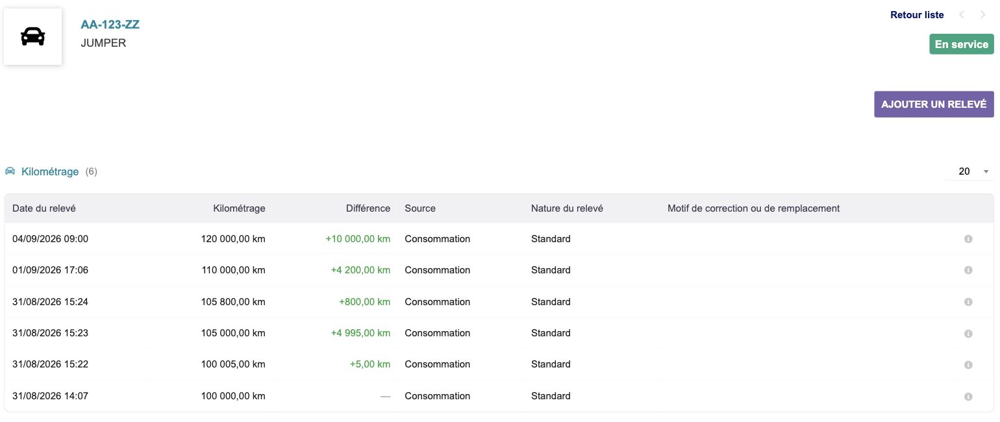
Relevés kilométriques avec date, différence et source. Les lignes issues des consommations sont gérées depuis leur fiche d'origine.Enregistrer un plein, une recharge ou un additif
- Cliquer sur Nouveau plein / recharge dans le menu latéral.
- Renseigner la date et l'heure, puis sélectionner le véhicule.
- Choisir la Nature et le carburant, la recharge ou l'additif correspondant. Compléter la référence d'huile lorsqu'elle est demandée.
- Vérifier le conducteur, saisir la quantité dans l'unité proposée et le kilométrage du compteur.
- Saisir le Total TTC. Pour un additif dont le prix est inconnu, laisser le montant vide ; zéro signifie un prix connu égal à zéro.
- Choisir le projet si nécessaire. Lorsque les opérations diverses sont actives, vérifier le règlement et joindre le ticket PDF, JPEG ou PNG.
- Conserver un relevé standard pour une saisie ordinaire ; justifier une correction ou un remplacement de compteur si c'est le cas.
- Cliquer sur Enregistrer et vérifier la fiche obtenue.
Un avertissement de dépassement de capacité invite à vérifier la quantité, l'unité, le véhicule et sa capacité configurée. Les champs financiers et le ticket ne sont plus librement modifiables après rapprochement bancaire ou transfert comptable.
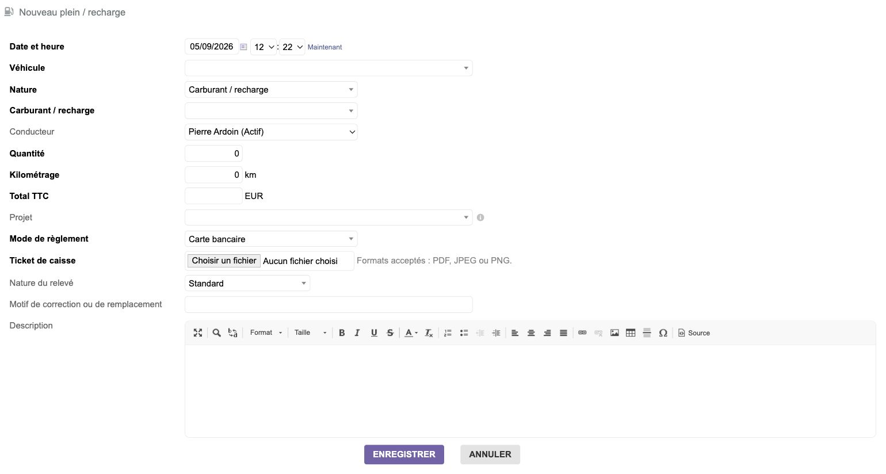
Formulaire de plein ou recharge avec ticket de caisse et règlement, lorsque les opérations diverses sont activées.Consulter les consommations et statistiques
- Cliquer sur Consommation pour ouvrir la synthèse globale, ou sur l'onglet Consommation d'un véhicule pour son suivi individuel.
- Définir la période et, selon le besoin, filtrer par véhicule, conducteur, consommable ou nature.
- Lancer la recherche avec la loupe.
- Lire les passages, quantités, coûts, moyennes et pics par consommable et unité.
- Consulter les courbes puis ouvrir Liste des pleins / recharges pour retrouver les saisies à l'origine d'une valeur.
Les unités restent distinctes : litres, kWh et kilogrammes ne s'additionnent pas. La colonne Intervalles exclus aide à repérer les intervalles non retenus dans les calculs. Les données de démonstration peuvent produire des pics volontairement atypiques ; elles n'illustrent pas la consommation normale du véhicule.
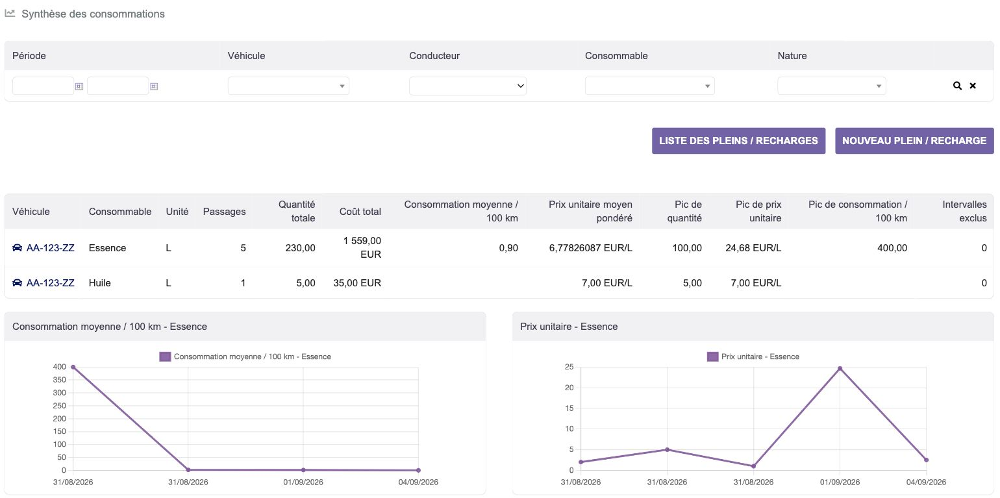
Synthèse filtrable et premiers graphiques : les valeurs affichées proviennent d'un jeu de données de test.Enregistrer une intervention, une panne ou un incident
- Depuis la fiche du véhicule, cliquer sur Nouvel événement véhicule.
- Renseigner le libellé, le type d'événement, sa date et les informations utiles sur le conducteur et le tiers intervenant.
- Préciser la gravité, le kilométrage et, si nécessaire, l'immobilisation et sa période.
- Décrire l'intervention puis enregistrer.
- Ajouter les justificatifs dans les fichiers joints de l'événement.
Le menu Événements véhicule permet de retrouver les interventions de l'ensemble du parc. L'historique du véhicule les regroupe avec ses autres opérations.
Associer la facture d'une intervention
Sur la fiche de l'événement ou du contrôle, deux parcours sont disponibles :
- Créer une facture fournisseur ouvre le formulaire natif. Vérifier le fournisseur, compléter la facture puis enregistrer : le brouillon est lié à l'intervention.
- Lier une facture fournisseur existante permet de sélectionner une facture puis de cliquer sur Lier.
Vérifier ensuite la ligne dans Objets liés. Le lien de référence ouvre la facture. L'action de déliaison retire seulement l'association ; elle ne supprime ni la facture ni l'intervention.
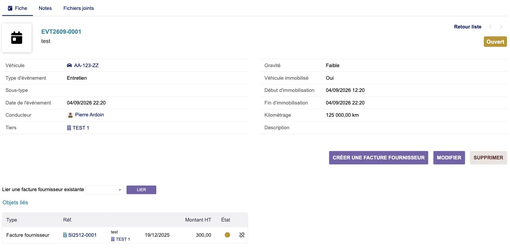
Fiche d'entretien et actions de création ou de liaison d'une facture fournisseur ; la relation existante apparaît dans Objets liés.Notice — assurances et attestations
Créer un contrat et couvrir des véhicules
- Cliquer sur Nouveau contrat dans la rubrique Contrats d'assurance.
- Sélectionner l'assureur, puis le contact ou courtier si nécessaire.
- Renseigner le numéro de police, le libellé, les garanties et la période du contrat.
- Préciser le renouvellement et la date de préavis connue. Ajouter les coordonnées d'assistance utiles.
- Sélectionner le ou les véhicules couverts, le type de couverture et sa période.
- Cliquer sur Enregistrer, puis vérifier les véhicules rattachés dans la fiche du contrat.
Une couverture peut être principale ou complémentaire. Un contrat de flotte permet de regrouper plusieurs véhicules dans la même police.
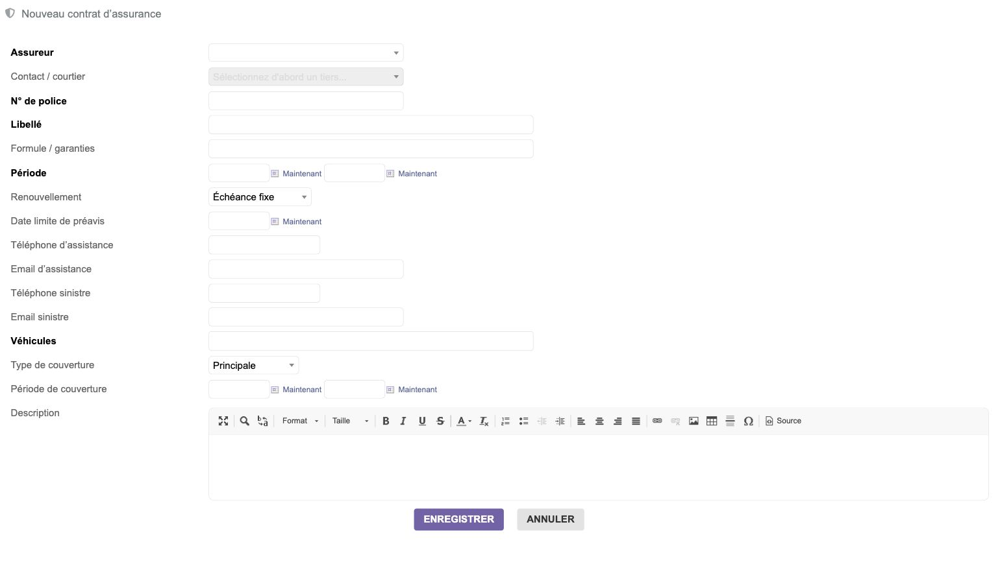
Extrait du formulaire de contrat : assureur, police, période et rattachement des véhicules.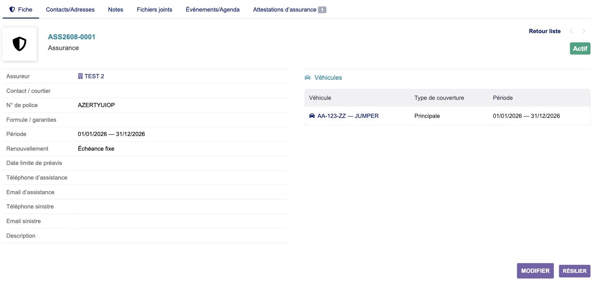
Contrat d'assurance enregistré et véhicule couvert, avec type et période de couverture.Déposer et faire contrôler une attestation
- Ouvrir le contrat depuis Liste des contrats.
- Choisir l'onglet Attestations d'assurance.
- Dans Nouvelle attestation d'assurance, choisir la portée : flotte couverte ou véhicule concerné selon les choix proposés.
- Renseigner la période et sélectionner le justificatif.
- Cliquer sur Enregistrer le brouillon pour poursuivre la préparation, ou Soumettre au contrôle lorsque le dossier est prêt.
- L'utilisateur habilité vérifie le justificatif et sa période, puis valide l'attestation ou la rejette avec un motif.
- Lors d'un renouvellement, enregistrer la nouvelle attestation et utiliser l'archivage prévu pour conserver la traçabilité de l'ancienne.
Le tableau affiche la portée, les dates, le justificatif téléchargeable et l'état. Un brouillon ne remplace pas une attestation contrôlée et validée.
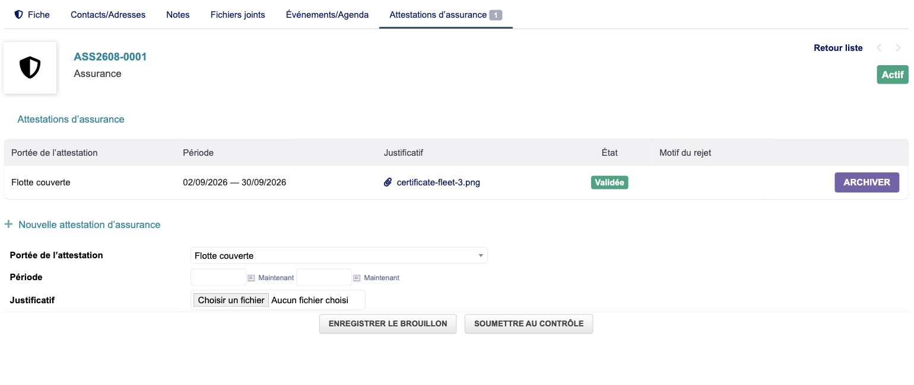
Attestation validée et formulaire de dépôt : enregistrement provisoire et soumission au contrôle sont deux actions distinctes.Notice — contrôles réglementaires
Qualifier le véhicule
- Ouvrir l'onglet Contrôles réglementaires de la fiche véhicule.
- Lire chaque question de Qualification réglementaire et sélectionner la réponse correspondant à l'usage réel.
- Renseigner les dates d'applicabilité lorsqu'elles sont nécessaires.
- Cliquer sur Enregistrer la qualification.
- Examiner les Exigences réglementaires calculées : qualification, dernier contrôle, date calculée, date retenue et état.
Pour un équipement de levage, l'intervalle de VGP doit être choisi après qualification technique. Le formulaire ne doit pas servir à deviner une périodicité. Une information manquante doit être complétée à partir des documents du matériel.
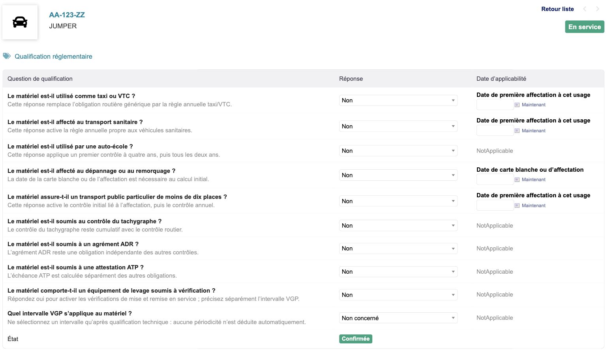
Extrait du questionnaire de qualification, à compléter selon les caractéristiques et l'usage du matériel.Lire l'échéancier
- Ouvrir Échéancier des contrôles dans le menu latéral.
- Filtrer la période, le véhicule, le type de matériel, le profil, le contrôle ou l'état.
- Trier les échéances par Date retenue pour préparer les interventions.
- Ouvrir le véhicule concerné pour retrouver le détail de l'exigence.
Les badges permettent de distinguer notamment une exigence À jour d'une exigence Échue. La date retenue est celle utilisée pour le suivi de l'exigence ; elle doit être lue avec la qualification et les documents correspondants.
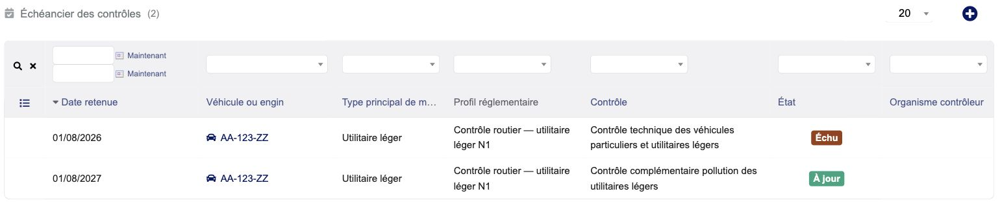
Échéancier du parc de démonstration, avec dates retenues et états des exigences.Enregistrer et valider un contrôle
- Depuis l'exigence du véhicule, cliquer sur Enregistrer un contrôle pour reprendre le véhicule et l'exigence. Le menu Nouveau contrôle permet aussi une création directe.
- Vérifier le véhicule, l'exigence et la nature du contrôle.
- Renseigner la date, l'organisme, la référence du procès-verbal et le résultat.
- Saisir la date de validité officielle. Si une autre date effective est retenue, renseigner son motif.
- Compléter les observations et cliquer sur Enregistrer.
- Sur le contrôle en brouillon, joindre le justificatif obligatoire puis vérifier les informations avant validation.
- Après validation, consulter l'exigence et son échéance actualisée.
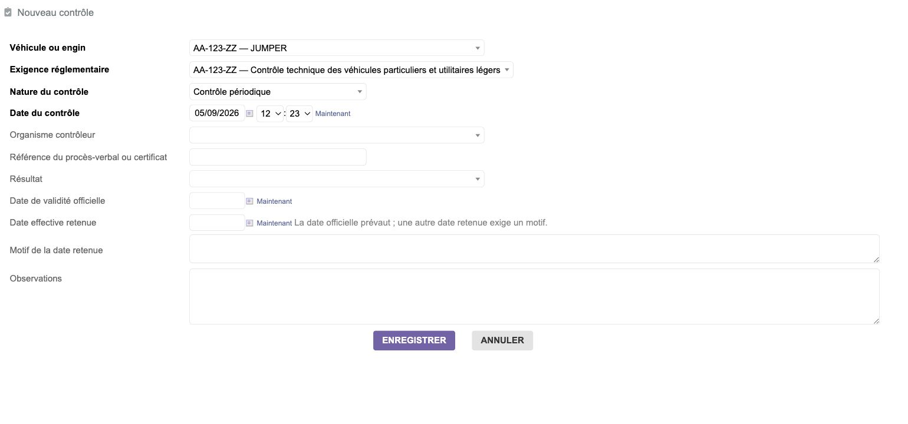
Création d'un contrôle depuis une exigence : organisme, résultat, référence du procès-verbal et dates.Un contrôle validé est immuable. Pour corriger une erreur, utiliser l'annulation motivée et le remplacement prévus par le module. Pour une contre-visite, conserver le lien avec le contrôle concerné. Une facture peut être liée ou déliée sans réécrire les données réglementaires validées.
Notice — documents et historique
Conserver les pièces et les notes
Utiliser l'onglet Notes pour les informations publiques ou privées selon les droits, et les fichiers joints de l'objet concerné pour ses pièces. Un rapport d'intervention appartient à l'événement ; un justificatif de contrôle appartient au contrôle. Ce rattachement permet de les retrouver ensuite dans le dossier du véhicule.
Les actions d'ajout, aperçu, téléchargement et suppression suivent les permissions de l'objet et les fonctionnalités disponibles dans la version de Dolibarr. Un droit de lecture n'autorise pas la modification des documents.
Générer et lire le dossier véhicule
- Ouvrir la fiche principale du véhicule et descendre au bloc Fichiers joints.
- Sélectionner Dossier véhicule dans Modèle de document.
- Cliquer sur Générer.
- Après génération, vérifier la présence du PDF et du ZIP dans le bloc.
- Cliquer sur la loupe du PDF pour l'aperçu, sur son nom pour le télécharger ou sur le ZIP pour récupérer l'archive documentaire.
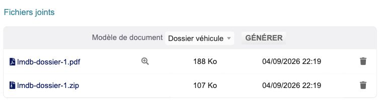
Bloc documentaire de la fiche : sélection du modèle, génération, aperçu du PDF et téléchargement de l'archive.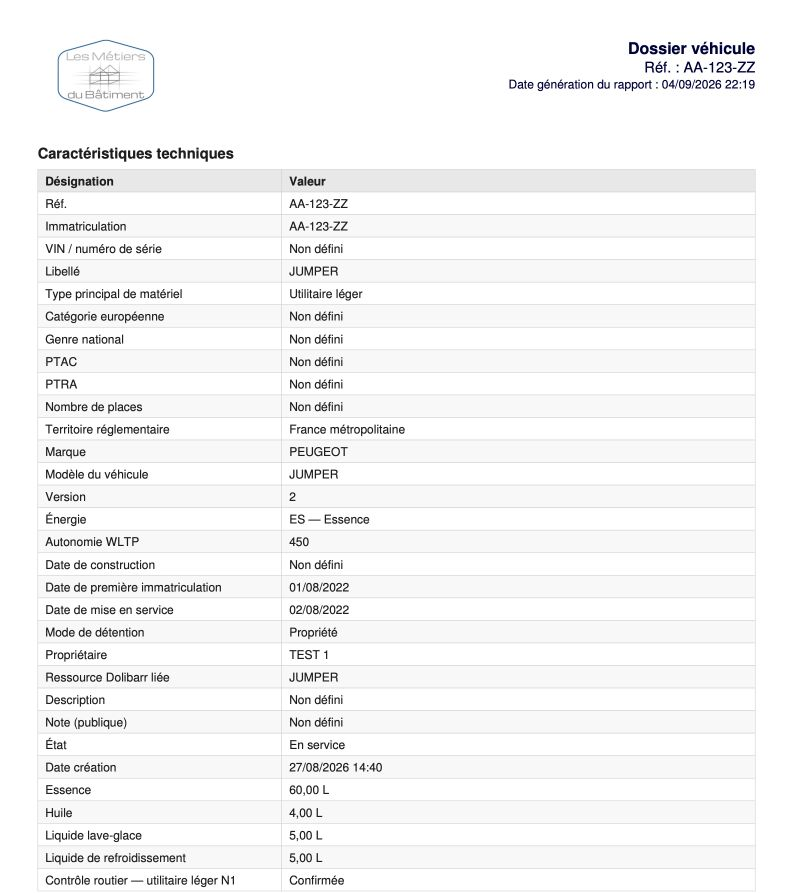
Extrait de la première page d'un dossier PDF existant : identification et caractéristiques du véhicule.Pour actualiser le dossier, relancer Générer. Les fichiers réservés au dossier ne doivent pas être remplacés manuellement. Les justificatifs des consommations et de leurs opérations diverses ne sont pas inclus dans l'archive. Les droits de lecture du véhicule et des factures fournisseurs restent requis pour consulter le dossier.
Retrouver une opération dans l'historique
- Ouvrir l'onglet Historique du véhicule.
- Filtrer par période, source, type, libellé ou état selon le besoin.
- Cliquer sur l'en-tête de la colonne Date pour trier ou sur le libellé d'une opération pour ouvrir sa fiche d'origine.
- Consulter l'indication documentaire lorsqu'une pièce est associée.
L'onglet Événements/Agenda présente les événements Agenda liés à l'objet. L'onglet Historique rassemble la chronologie métier disponible. Les deux vues répondent à des usages complémentaires.
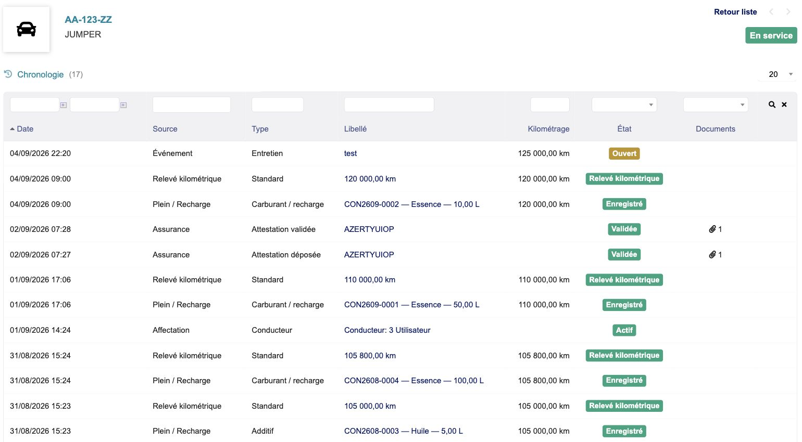
Chronologie consolidée : interventions, relevés, consommations, assurances et affectations.Importer ou exporter
Utiliser les fonctions d'import/export natives de Dolibarr avec les jeux de données du module et les droits correspondants. Préparer le CSV à partir des champs attendus par l'import, vérifier les références et l'entité, puis contrôler le résultat après traitement. Les contrôles réglementaires importés sont créés en brouillon.
L'import des consommations est refusé lorsque la création d'opérations diverses est active. Un prix d'additif absent doit rester une cellule vide ; un zéro doit être conservé comme zéro.
Questions fréquentes
| Situation | Vérification ou action |
|---|
| Un bouton n'apparaît pas | Vérifier les droits, l'état de l'objet et les dépendances dans Compatibilité. |
| Le dossier ne peut pas être généré | Vérifier l'activation du modèle, Factures fournisseurs, l'extension PHP ZIP et les droits sur le véhicule et les factures. |
| Le kilométrage d'une ligne ne peut pas être modifié | Si la source est une consommation, ouvrir et corriger le plein ou la recharge d'origine. |
| Une attestation n'est pas considérée comme validée | Vérifier son état, sa portée, sa période et son justificatif ; un brouillon doit encore être soumis au contrôle. |
| Une échéance manque | Vérifier les caractéristiques, les réponses de qualification et les dates nécessaires au calcul. |
| Les relances ne partent pas | Vérifier l'activation des rappels, les destinataires, les modèles d'emails, l'envoi d'emails Dolibarr et le dernier résultat des travaux planifiés. |
| Une dépense ne peut plus être corrigée | Vérifier son rapprochement bancaire ou son transfert comptable avant toute correction dans le parcours financier natif. |
| Des données d'une autre entité apparaissent | Vérifier la colonne Environnement et les partages autorisés dans Multicompany. |
Mise à jour
Avant toute mise à jour, sauvegarder la base de données et les documents de l'installation.
Après remplacement des fichiers du module, le désactiver puis le réactiver pour appliquer les migrations et enregistrer les déclarations natives nécessaires. Les réglages existants sont conservés.
Pour une mise à jour depuis une version de développement :
- consulter le fichier
ChangeLog.md de la distribution ; - vérifier les modèles documentaires et les travaux planifiés ;
- régénérer les dossiers existants pour bénéficier de leur présentation finale ;
- vérifier les paramètres bancaires avant d'activer la création d'opérations diverses.
Les nouveaux libellés Agenda s'appliquent aux événements futurs. Les historiques et contrôles validés ne sont pas réécrits.
Limites de la version 1.0.0
- Les contrôles détaillés des extincteurs, appareils sous pression, accessoires de levage et fluides frigorigènes ne sont pas préconfigurés.
- La gestion dédiée des cartes grises, sinistres, primes, franchises et contraventions n'est pas couverte.
- La gestion commerciale des factures d'achat reste assurée par le module natif Factures fournisseurs.
- Les rappels périodiques nécessitent une configuration opérationnelle des travaux planifiés et de l'envoi d'emails Dolibarr.
Sources et liens utiles